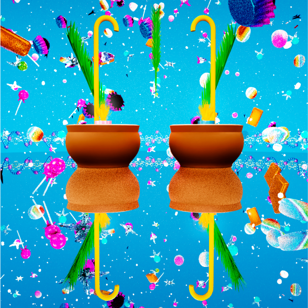
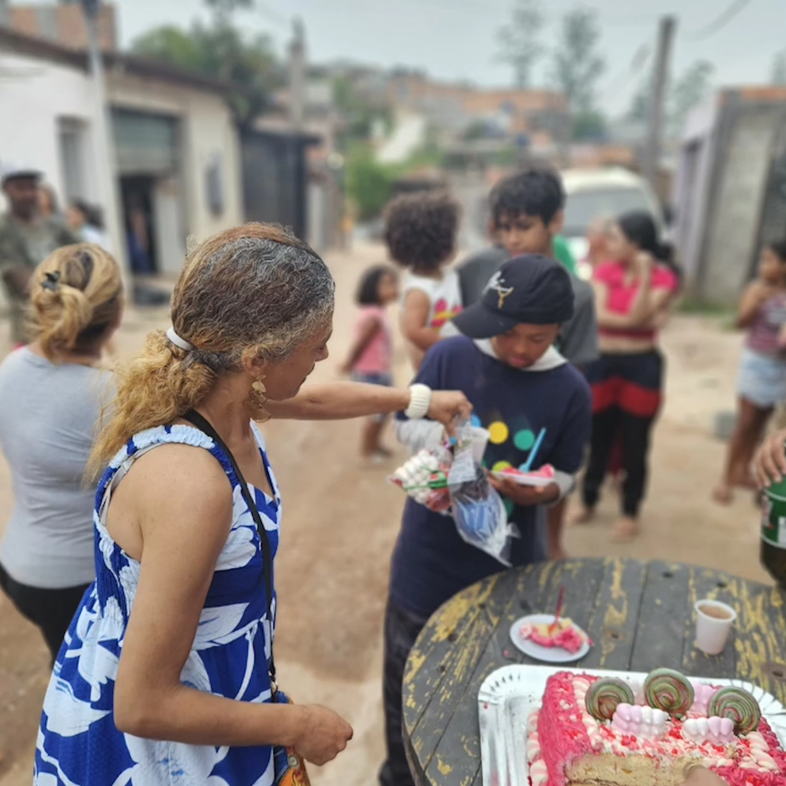
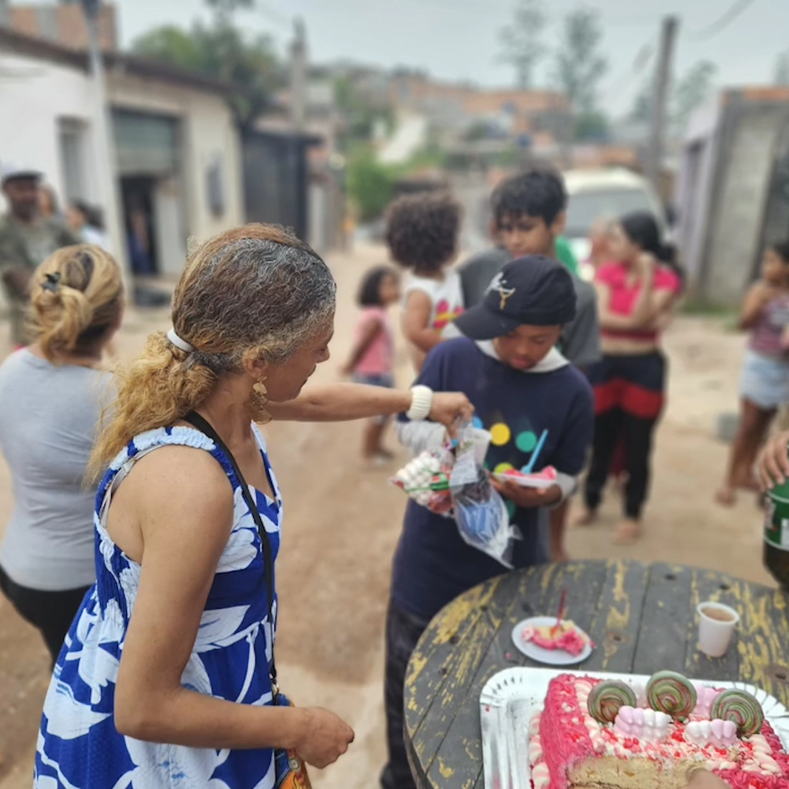

A Festa das Crianças de Nova Canaã
Em 2024, a tradicional festa das crianças da Comunidade Nova Canaã, no Jardim Vera Cruz (Zona Sul de São Paulo), levou alegria e doces para mais de 40 crianças. Organizada por Priscila Valentina, em parceria com grupos locais, a ação contou com doações e rifas beneficentes para tornar essa celebração possível. Inspirada pela causa, contribui criando materiais visuais para fortalecer a campanha e alcançar mais pessoas.


 

Festa de Rua das Crianças Nova Canaã Jardim Vera Cruz - São Paulo - 2024
Nova Canaã Jardim Vera Cruz
São Paulo - 2024